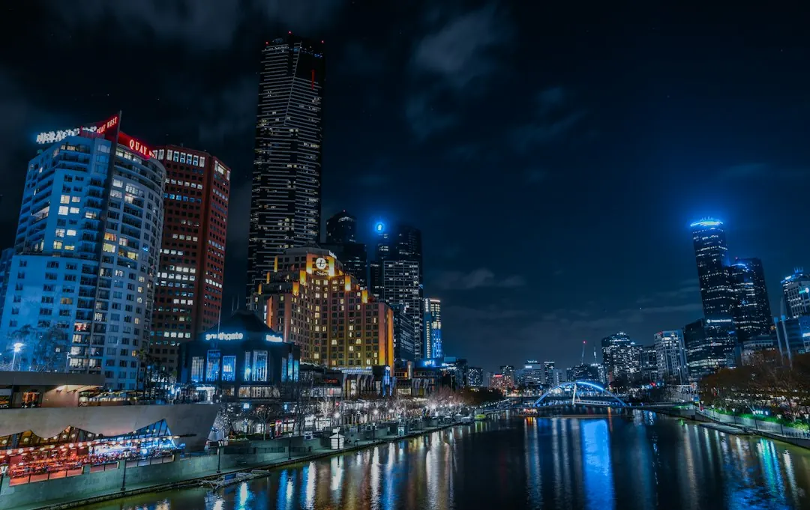

A single-phase switchboard upgrade is typically listed at $800 to $3,500 or more, while a three-phase upgrade is typically $3,000 to $5,000 or more. The final price depends on circuit count, existing wiring condition, scope and complexity. A licensed electrician assesses the board, wiring and circuits, provides the quote, completes the work and issues a Certificate of Electrical Safety. Main switchboard replacement is prescribed work and includes an independent licensed electrical inspection.
For homeowners comparing switchboard upgrades Melbourne options, the useful questions are whether the existing board has adequate protection, what electrical capacity the property needs and what certification follows the work.
Switchboard Upgrades Melbourne Explained
The published information from Switchboard Upgrades Melbourne describes older Melbourne homes with ceramic fuse-type boards, rewireable fuses, no safety switches and limited spare capacity. It also describes fuses that keep blowing, circuits that trip when a heater and kettle run together, and boards without RCD protection as situations where electrical safety could be better.
The board is assessed alongside the wiring and circuits it serves. A licensed electrician can explain whether the property needs a single-phase switchboard change, three-phase work, safety switch installation, circuit breaker upgrades or a broader replacement. The quote should make that distinction clear.
- Ask which circuits will receive circuit breakers, safety switches or RCBOs.
- Ask whether the existing wiring condition changes the proposed scope.
- Ask whether planned solar, a smart meter or new appliances affect the required capacity.
Choose protection for the property
A modern board can replace ceramic fuse carriers with circuit breakers and safety switches. An RCD safety switch is designed to cut power when it detects current leaking to earth. An RCBO combines overload protection and safety switch protection in one device, so the written quote should identify the proposed arrangement for each circuit.
Single-phase work is presented as the usual option for many homes, with room for future circuits. Three-phase power may be relevant to larger homes, workshops or properties with higher-draw appliances, but the assessing electrician must scope that requirement. The correct choice depends on the property and its electrical demands, not simply on selecting the largest available board.
Solar and smart meter plans should be raised before the work is priced. The published guide says electricians handle upgrades for solar compatibility and smart meter compatibility, with capacity and modern circuit protection considered for the new equipment.
Clarify asbestos-backed board work
Some older ceramic fuse-type boards have asbestos backing. The published guidance says removal and disposal must follow WorkSafe Victoria asbestos rules. A trained electrician may handle a small, sound, non-friable board within strict limits, while other situations require a licensed asbestos removalist.
Ask whether asbestos is suspected, who will assess the backing, who is responsible for removal and disposal, and whether that work is included in the quote. These questions should be answered before the board is opened or removed.
The same quote discussion should record the number of circuits, wiring condition, phase arrangement and any solar or smart meter requirements. Those inputs help distinguish a straightforward board change from a more involved replacement and make the final scope easier to compare.
Read the quote against the published cost guide
The published guide lists a single-phase switchboard upgrade at typically $800 to $3,500 or more, depending on circuit count and existing wiring condition. A three-phase upgrade is listed at typically $3,000 to $5,000 or more, depending on scope and complexity. These figures are guide ranges, not a fixed price for every Melbourne property.
Compare quotes by checking the phase arrangement, number of circuits, safety switch or RCBO configuration, wiring work, asbestos handling, solar or smart meter preparation, certification and inspection requirements. Ask what findings could change the price once the existing board and wiring are assessed.
The described enquiry process has three stages: provide details about the current board, receive an assessment and quote from a licensed electrician, then complete the upgrade and receive certification. The published quote is described as having no obligation to proceed. For a separate perspective on replacement scope, see the Melbourne switchboard replacement guide.
Who this guide applies to
This guide is for Melbourne homeowners dealing with an older ceramic fuse board, missing RCD protection, repeated fuse or circuit problems, limited capacity, planned solar or smart meter installation, or uncertainty about single-phase and three-phase options.
It also suits anyone comparing a basic upgrade with a full replacement. The relevant questions concern the property's circuits, wiring, board condition, protection devices and future equipment. A licensed electrician must assess those details, and the completed work should follow the stated Victorian certificate and inspection pathway.
Before accepting a quote, ask for the proposed devices, circuit coverage, asbestos arrangements, price assumptions and certification steps in writing. That gives the homeowner a clear record of what is included and what still requires assessment.
- Describe the current board. Provide the property details, current board information and any symptoms such as blowing fuses or simultaneous appliance trips.
- Arrange an assessment. Have a licensed electrician inspect the board, wiring, circuits and proposed future equipment before pricing the work.
- Compare the scope. Check the phase arrangement, protection devices, asbestos handling, capacity allowances and possible price changes.
- Confirm certification. Ask how the Certificate of Electrical Safety and the independent inspection for prescribed main switchboard work will be handled.
| Option | When it may fit | What to clarify |
|---|---|---|
| Single-phase upgrade | Many homes replacing ceramic fuses with modern protection | Circuit count, wiring condition and future circuit capacity |
| Three-phase upgrade | Larger homes, workshops or higher-draw appliances | Why three-phase is required and how scope affects price |
| Safety switch or RCBO work | A board lacks RCD protection or needs modern circuit protection | Which circuits are protected and whether RCBOs are proposed |
| Asbestos-backed replacement | An older board may have asbestos backing | Who assesses, removes and disposes of the backing |
Common questions
What does a single-phase upgrade typically cost? The published guide lists $800 to $3,500 or more, depending on circuit count and existing wiring condition. The assessing electrician provides the final quote.
When might three-phase power be considered? The supplied service information identifies larger homes, workshops and properties with higher-draw appliances as situations where three-phase power may be needed. The requirement must be scoped during assessment.
What certificate follows the completed work? The described process ends with a Certificate of Electrical Safety. Main switchboard replacement is prescribed work and is also checked by an independent licensed electrical inspector under the stated Victorian process.
What should happen if the board has asbestos backing? Ask who will assess the material and handle removal and disposal. The supplied information says the work must follow WorkSafe Victoria asbestos rules, with some cases requiring a licensed asbestos removalist.
This guide covers board condition, protection choices, asbestos questions, upgrade costs, quoting and Victorian certification for Melbourne homes.